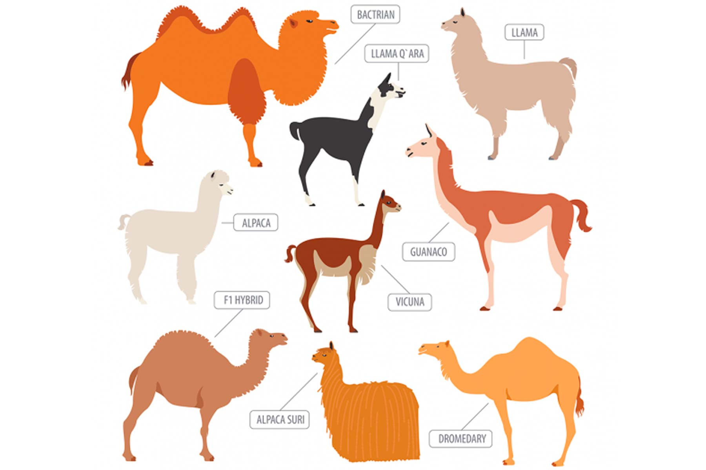
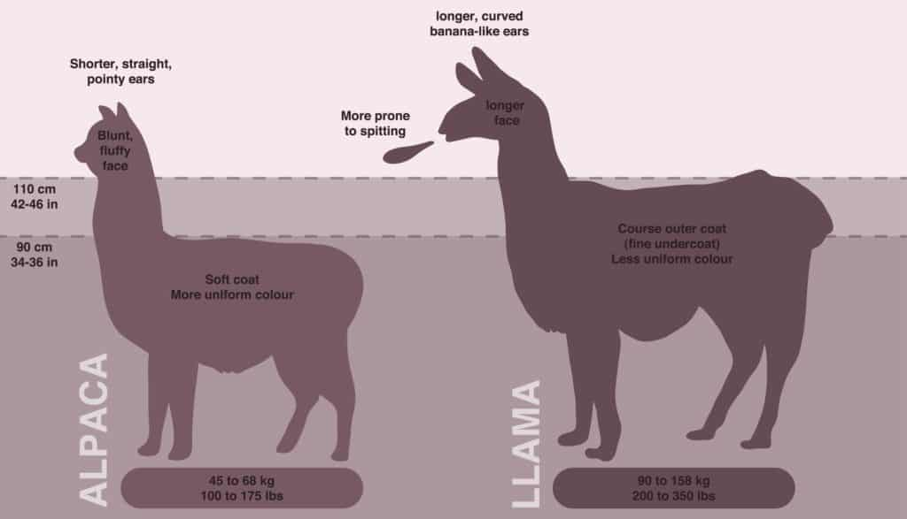

Lamele și alpacalele sunt specii de animale ce fac parte din familia cămilelor, Camelidae. Se găsesc în principal în Peru și Bolivia, alcătuind două dintre cele patru specii lamoidiene - celelalte două specii, vicuña și guanaco, sunt verii lor sălbatici. Interesant este că toate cele patru specii sunt capabile să se încrucișeze și să creeze descendenți fertili.
Ilustrația de mai jos cuprinde toți membrii familiei Camelidae:

După cum se poate observa, alpacalele și lamele sunt foarte asemănătoare și pot fi încurcate ușor, însă ele diferă în câteva moduri cheie.
1. Urechile: alpacalele au urechi scurte în formă de suliță, în timp ce lamele au urechi mult mai lungi, în formă de banană.
2. Greutate și înălțime: o alpaca cântărește aproximativ 80 de kilograme, în timp ce lamele pot ajunge până la 200 de kilograme. La nivelul umărului, o alpaca are între 34 și 36 inci (88 cm), în timp ce o lamă variază în general între 42 și 46 inci (111 cm).
3. Fețele lor: Lamele au o față mai lungă, în timp ce fața unei alpacale este un pic mai netedă, oferindu-i un aspect „blând”.
4. Lâna lor: alpaca produce mai multă lână decât alpaca, iar aceasta este mai fină. Mai mult, lamele nu au la fel de mult păr pe față ca alpacalele.

Vrei să afli mai multe despre lame și alpacale? Sari la pagina următoare!